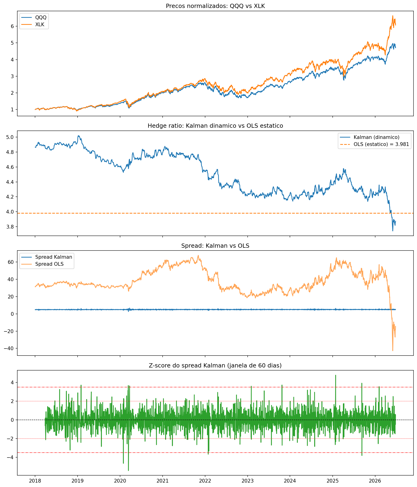
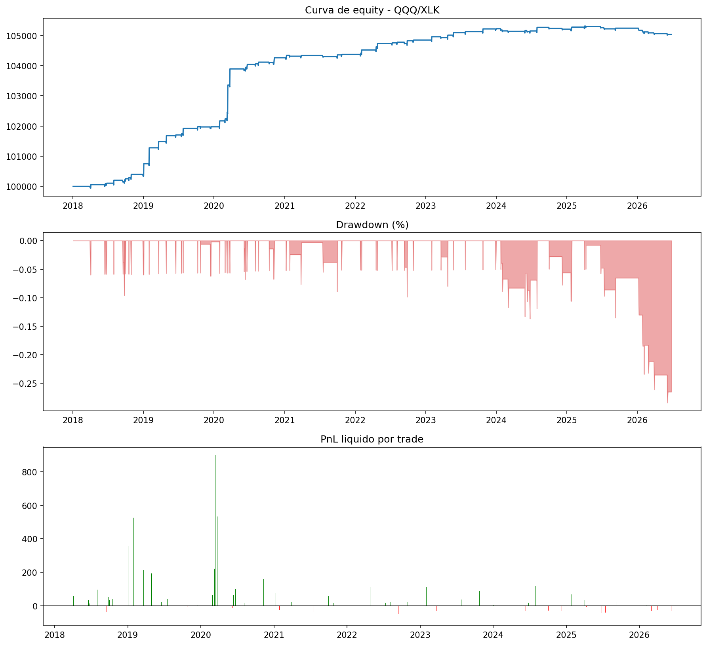
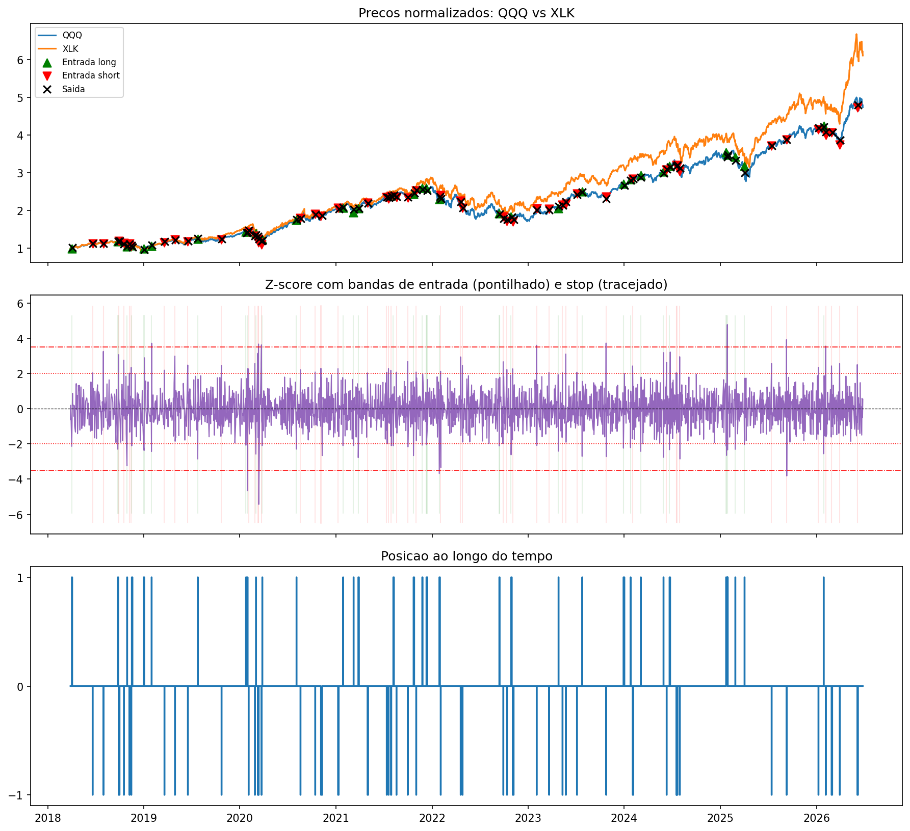
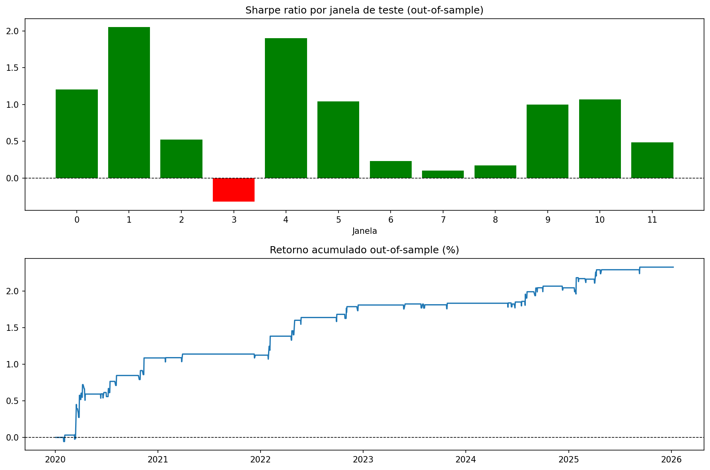

Estratégia estatística de reversão à média sobre o par QQQ/XLK, com hedge ratio dinâmico estimado via Kalman Filter e validação walk-forward out-of-sample. Máquina de estados tick a tick, zero look-ahead bias, custos reais de transação.
A statistical mean-reversion strategy on the QQQ/XLK pair, with a dynamic hedge ratio estimated via a Kalman Filter and out-of-sample walk-forward validation. Tick-by-tick state machine, zero look-ahead bias, real transaction costs.
O ponto de partida de qualquer estratégia de pairs trading é encontrar um par cointegrado, cuja combinação linear seja estacionária. Aplicando os testes de Engle-Granger e Johansen sobre todo o histórico de 2018–2026, o resultado foi inequívoco: nenhum dos 18 pares correlacionados passou os dois testes simultaneamente. Os melhores candidatos ficaram apenas na fronteira da significância.
The starting point of any pairs-trading strategy is finding a cointegrated pair, one whose linear combination is stationary. Applying the Engle-Granger and Johansen tests over the full 2018–2026 history, the result was unequivocal: none of the 18 correlated pairs passed both tests simultaneously. The best candidates sat right at the edge of significance.
O limiar de aprovação é p < 0.05, e todos ficaram acima. A razão é estrutural: ao longo de 8 anos, a relação entre os ativos sofreu múltiplas quebras de regime. O choque da COVID (2020) rompeu correlações históricas, o ciclo de aperto do Fed (2022) reprecificou setores inteiros, e a expansão da megacap tech (2023–24) distorceu a relação entre índices amplos e o setor de tecnologia. Um teste de cointegração sobre janela única e longa não consegue capturar uma relação que existe, mas se desloca no tempo.
The approval threshold is p < 0.05, and all of them landed above it. The reason is structural: over 8 years, the relationship between the assets went through multiple regime breaks. The COVID shock (2020) broke historical correlations, the Fed tightening cycle (2022) repriced entire sectors, and the megacap tech expansion (2023–24) distorted the relationship between broad indices and the tech sector. A cointegration test over a single long window cannot capture a relationship that exists but shifts over time.
Em vez de um hedge ratio fixo via OLS, o Kalman Filter trata o coeficiente β[t] como um estado latente que evolui dinamicamente, atualizado a cada novo preço. O efeito sobre a estacionariedade do spread é dramático:
Instead of a fixed OLS hedge ratio, the Kalman Filter treats the coefficient β[t] as a latent state that evolves dynamically, updated with each new price. The effect on the spread's stationarity is dramatic:
O hedge ratio OLS fixo mascara uma relação de cointegração que só se revela quando β é livre para variar. O spread Kalman tem desvio padrão ~49× menor e é estatisticamente estacionário, exatamente a propriedade que torna a reversão à média operável.
The fixed OLS hedge ratio masks a cointegration relationship that only reveals itself when β is free to vary. The Kalman spread has a standard deviation ~49× smaller and is statistically stationary, exactly the property that makes mean reversion tradeable.

Já que a cointegração é instável numa janela única, a seleção foi feita por janelas rolantes (treino 504d / teste 63d, deslizando 63d, com Johansen relaxado). Contando em quantas das 15 janelas cada par foi aprovado, emerge uma hierarquia clara de robustez:
Since cointegration is unstable over a single window, selection was done with rolling windows (504d train / 63d test, sliding 63d, with a relaxed Johansen). Counting in how many of the 15 windows each pair passed, a clear robustness hierarchy emerges:
QQQ/XLK foi escolhido como par principal: é o mais frequente (6 janelas, não-contíguas, de 2018 a 2025), com half-life consistente de 11–17 dias. São dois ETFs de tecnologia com overlap econômico genuíno (XLK e o componente tech do QQQ compartilham as mesmas megacaps), o que dá fundamento econômico, não apenas estatístico, à relação.
QQQ/XLK was chosen as the primary pair: it is the most frequent (6 non-contiguous windows, from 2018 to 2025), with a consistent 11–17 day half-life. They are two technology ETFs with genuine economic overlap (XLK and the tech component of QQQ share the same megacaps), which gives the relationship an economic, not merely statistical, foundation.

De 13.21% de retorno bruto, apenas 5.03% chegam ao bolso. Comissão ($0.005/ação) e slippage (0.05%) sobre 84 trades de giro rápido devoram a maior parte do edge estatístico.
Of 13.21% gross return, only 5.03% reaches the pocket. Commission ($0.005/share) and slippage (0.05%) over 84 fast-turnover trades devour most of the statistical edge.
O z-score do spread Kalman é traduzido em sinais de trading por uma máquina de estados processada tick a tick: um loop explícito, não vetorizado, justamente para garantir zero look-ahead bias: a decisão em cada dia depende apenas do estado anterior e do z-score corrente. Entrada quando o spread desvia ±2σ da média (long se <−2σ, short se >+2σ), saída por reversão ao cruzar ±0.5σ, stop loss de proteção em ±3.5σ.
The z-score of the Kalman spread is translated into trading signals by a state machine processed tick by tick: an explicit, non-vectorized loop, precisely to guarantee zero look-ahead bias: each day's decision depends only on the previous state and the current z-score. Entry when the spread deviates ±2σ from the mean (long if <−2σ, short if >+2σ), exit on reversion crossing ±0.5σ, protective stop loss at ±3.5σ.

O teste definitivo. Em cada janela, o Kalman é re-treinado apenas com dados de treino (504d) e opera 126d out-of-sample, com o z-score normalizado pelas estatísticas do treino: zero look-ahead.
The definitive test. In each window, the Kalman is re-trained on training data only (504d) and operates 126d out-of-sample, with the z-score normalized by the training statistics: zero look-ahead.

O que diferencia análise séria de projeto de estudante: as limitações no mesmo nível de destaque que os resultados positivos.
What separates serious analysis from a student project: the limitations given the same prominence as the positive results.
Nota metodológica: no walk-forward, o capital é reinicializado em $100k a cada janela (sem compounding). O retorno acumulado OOS é uma medida de consistência, não uma curva de patrimônio de uma única conta operando continuamente.
Methodological note: in the walk-forward, capital is reset to $100k for each window (no compounding). The cumulative OOS return is a measure of consistency, not the equity curve of a single account trading continuously.